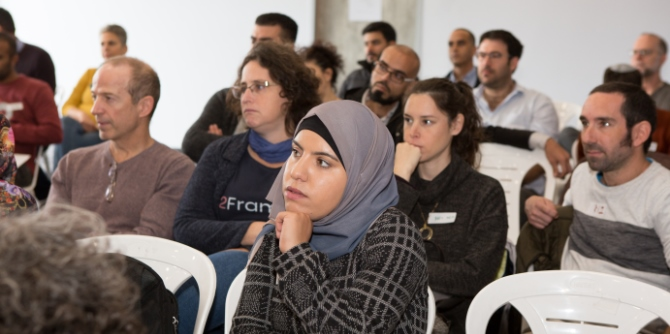
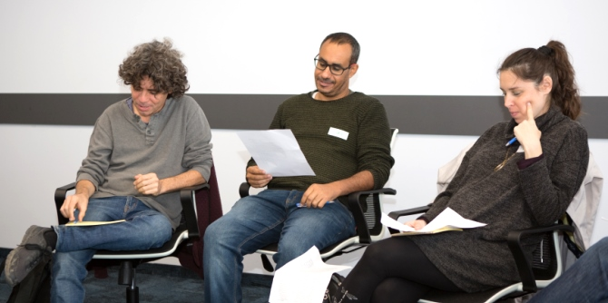
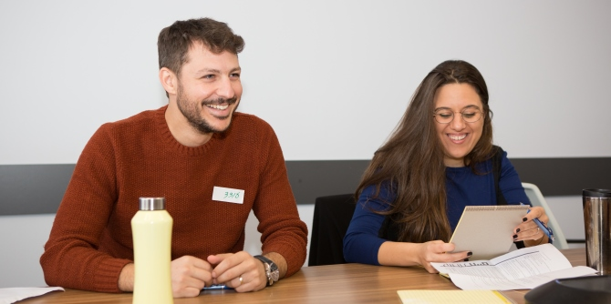
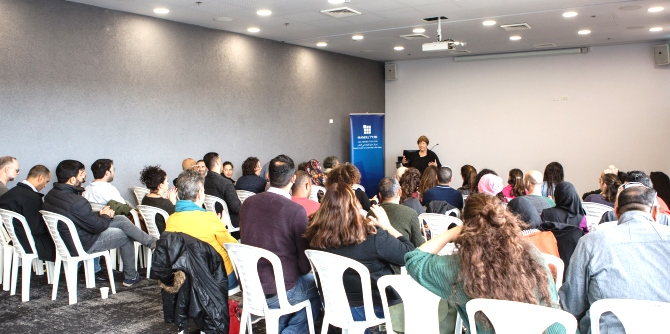
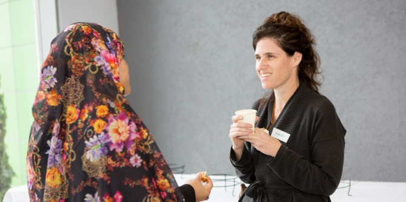

The fellows of the Mandel Program for Regional Leadership in Kseifa and Arara BaNegev, of Cohort 4 of the Mandel Program for Regional Leadership in Beer Sheva, and of Cohort 2 of the Mandel Program for Cultural Leadership in the Negev came together for a joint study day held at the Idan HaNegev industrial park in Rahat. The unique study day aimed to foster connections between the fellows of all the programs currently underway at the Mandel Center for Leadership in the Negev; to create opportunities for shared dialogue on questions of leadership in the Negev; and to explore theoretical and practical aspects of visions, areas of interest, and initiatives. In targeting these goals, the study day was designed to create the infrastructure for a community of Mandel fellows working together to lead change throughout the Negev.
The location chosen for the event was the Idan HaNegev industrial park in Rahat. The park is the product of collaboration between three local authorities: the city of Rahat, the Bnei Shimon regional council, and the Lehavim local council. The industrial park serves as an important driver of growth, employment, and economic development for the region, while it embodies the values of mutual respect, excellence, and community engagement. Some 2,600 employees, both Jews and Arabs, work in this industrial park, which is becoming an important center of employment that is changing the face of the northern Negev.

The day began with a workshop designed to introduce the fellows of the three different programs to one another. The fellows then met with Moshe Paul, the CEO of Idan HaNegev, who presented the vision behind the establishment of the park, and explained how this vision was realized. Next, the mayor of Rahat, Faiz Abu Sahiban, described the partnerships forged by the heads of the three local authorities in order to establish the park. Following his presentation, Sigal Moran, who headed the Bnei Shimon regional council and was involved in the development of Idan HaNegev from the very start, spoke about the long and complicated process of reaching agreements and creating alliances that led to the park’s establishment.
During their tour of the park, the fellows were divided into four study groups, each of which combined fellows from different programs. The first group focused on local authorities from a regional perspective. This group met with Nir Zamir, head of the Bnei Shimon regional council, who spoke about the impressive demographic growth in council’s communities, and explained how the success of Idan HaNegev was leveraged to develop additional industrial centers as regional initiatives.

The second group focused on governance. This group met with Sigal Moran, former head of the Bnei Shimon regional council, and with Lilach Columbus, a graduate of Cohort 2 of the Mandel Program for Regional Leadership in Beer Sheva, who had served as Moran’s personal assistant. The discussion explored questions of governance and leadership based on partnerships for regional development.
The third group examined the issue of employment. This group heard from six guest speakers who spoke about the employment of Bedouin women in the Negev, with a particular focus on cottage industries initiated by women entrepreneurs in the community. Two main issues emerged from the discussions that ensued: First, the larger problem of employment in the Negev, for both men and women in all groups and sectors, with an emphasis on the question of why Negev residents are left without work while jobs in places such as Ben-Gurion University of the Negev and the Beer Sheva hi-tech park are filled by people from other parts of the country. Second, there was criticism of home-based initiatives for women as a solution for unemployment in Bedouin society, based on claims that this approach reproduces the existing power structures in the community, and frames Bedouin culture as no more than folklore.

The fourth group explored initiatives in education. This group met with Adi Zand, CEO of Edulog, who spoke about her efforts to advance innovative ideas in education via a private company that works with the Ministry of Education to provide consulting and mentoring to schools.
The day concluded with a panel in which representatives of each of the three participating programs reviewed the learning process, and with a presentation of the personal visions of all the fellows, which was designed to promote shared discourse and joint action.
The stormy weather that characterized the day, and the sandstorm that blanketed the area with yellow dust, served as a reminder of the nature of the area in which the fellows are fully committed to working. It symbolized the force that the fellows must bring to their leadership activities, given the existing conditions in the Negev, if they are to be successful in bringing about real change and improving the quality of life for all residents of the region.

{kind=link}
{kind=link}
{kind=link}
{kind=link}
{kind=link}